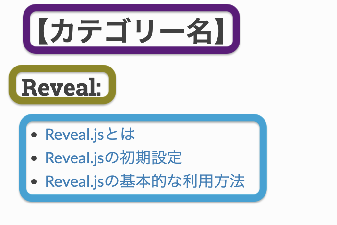

1. Sphinxとは¶
python製のドキュメント生成ツールでreSTやmarkdownで書かれたファイルをHTMLなどに変換する。
github Pagesと連携することで、github上でドキュメントを公開できる。
2. note¶
# ローカル出力
sphinx-autobuild -b html source build/html --port [PORT_NUM]
# htmlファイルの作成
make html
3. Sphinxの初期設定¶
3.1. Sphinxのインストール¶
python環境がインストールされていることが前提となる。 以下のコマンドでインストールされているか確認して、されていなければインストールする。
$ python -V
pipでsphinxをinstall
$ pip install sphinx
3.2. Sphinxのクイックスタート¶
クイックスタートコマンドを実行し、SphinxのProjectを作成する。対話形式での設定例は以下。
$ sphinx-quickstart
> ソースディレクトリとビルドディレクトリを分ける（y / n） [n]: y
> プロジェクト名: project
> 著者名（複数可）: author
> プロジェクトのリリース []:
> プロジェクトの言語 [en]: ja
以下の動作確認コマンド実行する。
$ make html
build/html/index.htmlのindex.htmlを開いてサンプルページが正しく作成されているか確認をする
3.3. ローカルホストでのホスティング¶
毎回、make htmlを実行するのは手間なので、autobuildをさせる。 autobuildを設定することで、localホストでホスティングされ、ファイルをsaveするたびに自動更新される。
ライブラリのインストール
$ pip install sphinx-autobuild
autobuildの実行は以下コマンド。PORT_NUMを指定しない場合は8080で起動する。
$ sphinx-autobuild -b html source build/html --port [PORT_NUM]
3.4. Markdownのための設定¶
Sphinxをドキュメント化するにあたって、Markdownを利用するためには以下の設定が必要。
myst-parserをインストール
$ pip install --upgrade myst-parser
インストール後に、source/conf.pyについて、以下のように修正を追加する
変更前
# -- General configuration ---------------------------------------------------
# https://www.sphinx-doc.org/en/master/usage/configuration.html#general-configuration
extensions = []
templates_path = ['_templates']
変更後
# -- General configuration ---------------------------------------------------
# https://www.sphinx-doc.org/en/master/usage/configuration.html#general-configuration
extensions = [
'myst_parser'
]
source_suffix = {
'.rst': 'restructuredtext',
'.md': 'markdown',
}
templates_path = ['_templates']
3.5. テーマの変更¶
Sphinxで作成するドキュメントにはいくつかのテーマが準備されている。 conf.pyを修正することによって、簡単にテーマを変更することが可能。
readthedocsというテーマが見やすくておすすめ。
sphinx_rtd_themeのインストール
$ pip install sphinx_rtd_theme
インストール後に、source/conf.pyについて、以下のように修正を追加する
修正前
# -- Options for HTML output -------------------------------------------------
# https://www.sphinx-doc.org/en/master/usage/configuration.html#options-for-html-output
html_theme = 'alabaster'
html_static_path = ['_static']
修正後
# -- Options for HTML output -------------------------------------------------
# https://www.sphinx-doc.org/en/master/usage/configuration.html#options-for-html-output
import sphinx_rtd_theme
html_theme = 'sphinx_rtd_theme'
html_theme_path = [sphinx_rtd_theme.get_html_theme_path()]
3.6. github pagesの設定¶
作成したhtmlをgithub pagesで公開することができる。 また、githubで公開することで、どの環境からも修正を加えることができる。
3.6.1. リポジトリ設定¶
github pagesで公開を行う場合は、publicとして作成を行う。
初期設定を行い、リモートとローカルにリポジトリを作成する。
3.6.2. jekelly対応¶
GitHub PagesではJekyllという静的サイトジェネレーターを使って、MarkdownやHTMLファイルを受け取り、整ったウェブサイトの形に変換する。
しかし、SphinxではJekyllによって画面が正しく表記されなくなってしまう。
そこで、Jekyllを無効化させるための.nojekyllというからのファイルを配置する必要がある。このファイルがあると、GitHub PagesはJekyllによる処理をスキップし、ファイルをそのままの形でホスティングします。つまり、Jekyllの変換機能を使わずに純粋な静的ホスティングを利用できるようになります。
docs/.nojekyllという配置になるようにdocs/配下に移動して、以下を実行する。
touch .nojekyll
3.6.3. 出力先の変更¶
github pagesでは、docs/index.htmlというパスを固定で参照しにいくので、docsというフォルダにも出力する必要がある。
Makefileを修正して、docsにも出力する設定を行う。
修正前
# Catch-all target: route all unknown targets to Sphinx using the new
# "make mode" option. $(O) is meant as a shortcut for $(SPHINXOPTS).
%: Makefile
@$(SPHINXBUILD) -M $@ "$(SOURCEDIR)" "$(BUILDDIR)" $(SPHINXOPTS) $(O)
修正後
# Catch-all target: route all unknown targets to Sphinx using the new
# "make mode" option. $(O) is meant as a shortcut for $(SPHINXOPTS).
%: Makefile
@$(SPHINXBUILD) -M $@ "$(SOURCEDIR)" "$(BUILDDIR)" $(SPHINXOPTS) $(O)
html: Makefile
@$(SPHINXBUILD) -b html "$(SOURCEDIR)" "docs" $(SPHINXOPTS) $(O)
3.6.4. github pagesの設定¶
リポジトリの/Setting/Pagesから、以下のように設定。

設定後、SphinxをPushするとGitHub Pageが作成され、URLからアクセス可能になる。

4. Sphinxの基本的な利用方法¶
4.1. index.rst¶
作成するファイルの階層構造をsource/index.rstで記述しておく。
【カテゴリー名】: 紫色枠部分のカテゴリー
【maxdepth】: 青色枠部分の各ファイルのセクションをどこまで表示するかの設定
【caption】：黄色枠部分のセクションを区切る部分
【カテゴリー名】
====================================
.. toctree::
:maxdepth: 1
:caption: Reveal:
Reveal/reveal.md

4.2. mdファイル¶
index.rstで定義したものと同じファイル構成でmdファイルを作成する。